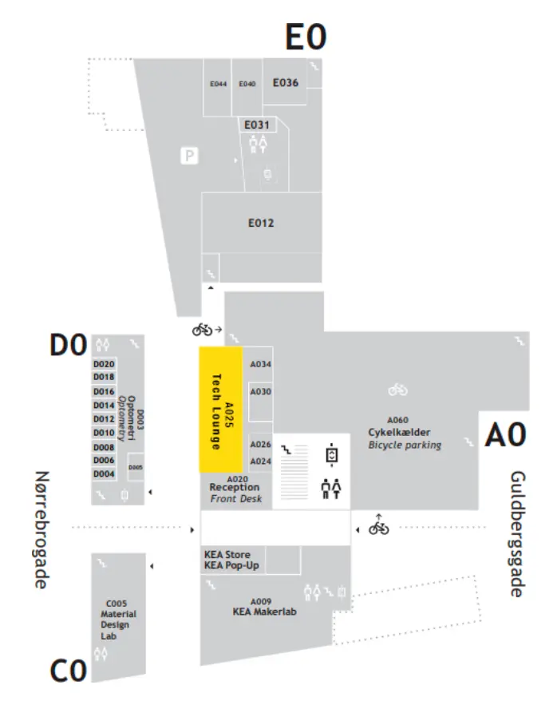

Tech & Story Lab
Tech & Story Lab er et lab med fokus på ny teknologi for KEAs studerende, undervisere og øvrige ansatte. Her kan du experimentere med nye apparater og udlåne udstyr til både faglige opgaver og personligt brug.
Studiekort
For at låne udstyr og benytte vores faciliteter skal du huske at medbringe dit studiekort.
Studiekortet skal være gyldigt og må kun benyttes af kortets ejer.
Adgang til labbet
Tech & Story Lab ligger på Guldbergsgade 29N, 2200 KBH N, i stueplan bag receptionen.
Vi har åbent for alle studerende, undervisere og øvrigt ansatte på KEA.
Åbningstider
Mandag-torsdag: 9.00-16.00
Fredag: 9.00-15.00
Frederick Lehmann Rosling
T: 46 46 04 42
E: techandstorylab@kea.dk
Vores Udstyr
For at booke og få udleveret udstyr, skal du besøge os i Tech & Story Lab, men her kan du se et overblik over
de
kameraer, mikrofoner, adaptere, AI-teknologier og mange andre devices som vi har til rådighed.
Du er også altid velkommen til at kigge forbi os for at få rådgivning og vejledning til dine projekter og
udstyret du
skal bruge dertil.
Kategorier
Adresse
Tech & Story Lab holder til på Guldbergsgade 29N, 2200 KBH N, i stueplan bag receptionen.
